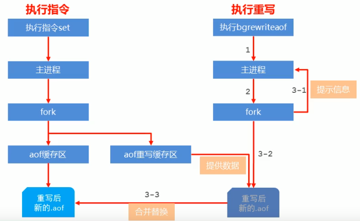
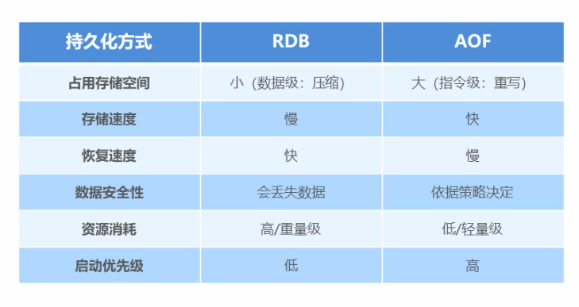

通过redis的配置文件更加深入的了解redis.
基础配置
port 6379可以自定启动端口daemonize yes以守护进程的方式启动redislogfile ""指定日志文件，如果为空，输出到标准输出dir指定工作目录，会将比如日志文件，数据库备份等存放在该目录下，需要先手动创建
持久化
利用永久性存储介质将数据进行保存，在特定的时间将保存的数据进行恢复的工作机制称为持久化。
持久化的方式：
- 数据（快照）—–> RDB
- 过程（日志）—–> AOF
RDB
命令 ：save 手动执行一次保存操作
效果 ：在指定的dir目录下生成dump.rdb文件
注意 ：save指令的执行会阻塞当前redis服务器，线上环境不建议使用
命令 ：bgsave 异步执行快照操作
效果 ：调用fork()产生一个子进程完成具体的save操作，完成后给redis返回消息，可以在日志文件中查看
相关配置
rdbcompression yes采用LZF压缩字符串对象rdbchecksum yesredis5之后采用CRC64对数据文件进行校验，会影响10%左右的性能，如果关闭，数据末尾的校验数据会被设置为0，跳过验证dbfilename dump.rdb设置dump数据库生成的文件名stop-writes-on-bgsave-error yes持久化出现问题时是否停止备份
部分源码
先只考虑没有冲突的情况（没有额外的saving/rewrite）
1 | /* If there is not a background saving/rewrite in progress check if |
如果操作没有error的话：
- 两次保存之间至少要间隔
sp->seconds秒，即使到目前为止写的次数已经超过了sp->changes - 经过
sp->seconds秒并不会重置server.dirty已经写的次数
之前还在想如果设置的save 10 2，那么只要我不在10s内做两次写操作，那不就不会save了？
= =。
特殊启动形式
- 全量复制
- 服务器运行过程中重启
debug reload（在客户端运行指令，下同） - 关闭服务器时指定保存数据
shutdown save
优点
- 能进行压缩，是一个紧凑的二进制文件，存储效率高
- 其数据是
redis在某个时间点的快照，适合于数据备份，全量复制等场景 - 恢复速度比
AOF快 - 用于灾难恢复
缺点
- 无法做到实时持久化，可能会丢失数据
bgsave由于需要创建子进程，会消耗一定的性能- 多版本
RDB文件格式可能不同意，有无法兼容的现象
AOF
Append only file持久化：以独立日志的方式记录每次写命令，重启时，重新执行AOF文件中的命令达到恢复数据的目的。能够解决数据持久化的实时性问题。
命令
appendonly yes/noappendfilename "filename.aof"appendfsync always/everysec/no
三种策略(appendfsync)
no: don't fsync, just let the OS flush the data when it wants. Faster.always: fsync after every write to the append only log. Slow, Safesteverysec: fsync only one time every second. Compromise.—————>default
重写
将redis进程内的数据转化为写命令同步到新AOF文件的过程。将对同一个数据的若干条命令执行结果转化为最终结果数据对应的指令进行记录，省去无效指令。
作用：
- 降低磁盘占用量
- 提高持久化效率
- 降低数据恢复用时
重写规则：
- 进程内已超时的数据不写
- 忽略无效指令，只保留最终数据的写入命令
- 对同一数据的多条写命令进行合并—————>每条指令最多写64个元素
重写配置：
auto-aof-rewrite-percentage 100auto-aof-rewrite-min-size 64mb- 涉及到的数据可以通过
info persistence查看——->aof_current_size,aof_base_size

对比
